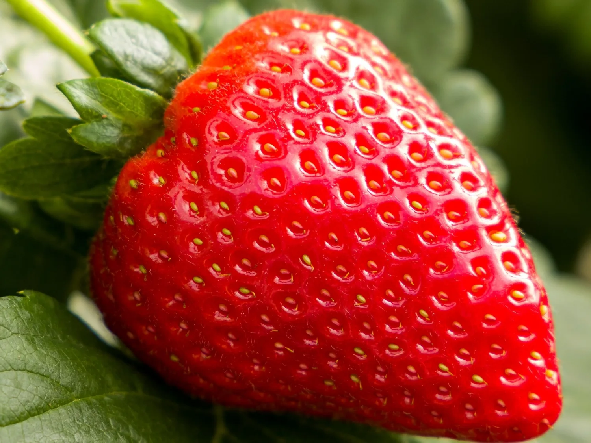

Семена F1
Estavana F1
Базовая фасовка: от 10 семян
от 750 ₽
Дневно-нейтральный гибрид с продолжительным плодоношением, крупной ягодой и устойчивостью к заболеваниям. Имеет смысл, если вы смотрите на сорт как на стабильный рабочий инструмент для длинной фермерской генерации.
Тип плодоношенияДневно-нейтральный.
ЯгодаКрупная, сладкая, с приятной кислинкой.
УстойчивостьПовышенная устойчивость к мучнистой росе и фузариозу.
Для чего подходитДлинный сбор, коммерческий ритм и ровная ягода в течение сезона.